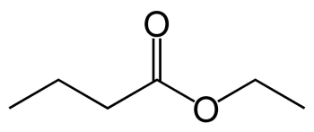

(UPF) A seguir, está representada a estrutura do éster responsável pelo flavor (sabor) de
abacaxi.

Alternativa A.
Sabendo que a reação de esterificação acontece de um ácido carboxílico e um álcool, devemos procurar uma opção que contenha duas moléculas dessas funções. Já eliminamos aqui a alternativa B, que, apesar de conter um ÁCIDO CARBOXÍLICO, tem como outra molécula um HALETO ORGÂNICO; a alternativa D, que contém uma CETONA e um ALCANO; e a alternativa E, que contém dois álcoois, restando-nos apenas alternativas A e C. Observando a molécula de éster dada pela questão, podemos ver que o ácido formador possui quatro carbonos, e o ÁLCOOL, dois, portanto, a letra A é a alternativa que contém os reagentes formadores: ácido butanoico e etanol.
Sabendo que a reação de esterificação acontece de um ácido carboxílico e um álcool, devemos procurar uma opção que contenha duas moléculas dessas funções. Já eliminamos aqui a alternativa B, que, apesar de conter um ÁCIDO CARBOXÍLICO, tem como outra molécula um HALETO ORGÂNICO; a alternativa D, que contém uma CETONA e um ALCANO; e a alternativa E, que contém dois álcoois, restando-nos apenas alternativas A e C. Observando a molécula de éster dada pela questão, podemos ver que o ácido formador possui quatro carbonos, e o ÁLCOOL, dois, portanto, a letra A é a alternativa que contém os reagentes formadores: ácido butanoico e etanol.
Marque a opção que indica corretamente os reagentes que podem ser usados para produzir esse éster
via reação de esterificação catalisada por ácido.